The logic/ module serves as the AI-powered forecasting subsystem of the project. It is responsible for transforming raw external data—specifically news headlines and technical market candles—into structured trading signals. It leverages the agent-swarm-kit framework to orchestrate LLM completions, tool usage, and data retrieval.
The engine follows a structured pipeline: it gathers context via specialized "Advisors," processes that context through a specific "Outline" (prompt template), and executes the inference using "Ollama" completion implementations.
The forecasting logic is initialized via logic/index.ts, which sets up configurations and imports the core components. The main entry point for the rest of the application is the forecast function, which triggers the AI pipeline for a specific symbol and timestamp.
The following diagram illustrates how the logic/ module bridges the gap between natural language data (news) and structured code entities (forecast objects).
Natural Language to Code Entity Mapping

The engine is organized into four primary functional areas, each handled by specialized sub-modules registered in the core index.
The pipeline is governed by the ForecastOutline. This component defines the "Persona" (a Russian macro-analyst), the input requirements, and the strict ForecastResponseContract that the LLM must adhere to. It ensures that the output includes a sentiment (bullish/bearish/neutral), a confidence score, and detailed reasoning.
For details, see Forecast Pipeline & Outline.
Advisors are the "eyes" of the LLM. The system registers three distinct advisors via agent-swarm-kit to provide multi-modal context:
For details, see Advisors: News & Market Data.
The fetchNews utility is the backbone of the news advisor. It manages the integration with the Tavily API, applies domain blacklists/whitelists, and enforces a 24-hour NEWS_WINDOW. Crucially, it includes a file-based caching mechanism to ensure backtests are deterministic and free from look-ahead bias.
For details, see News Fetching & Caching (fetchNews).
The engine supports two methods of interacting with the Ollama inference server:
OllamaOutlineToolCompletion for models that support function calling.OllamaOutlineFormatCompletion for structured JSON output.
These implementations handle the low-level communication, retries, and JSON repair logic required to maintain system stability.For details, see Ollama Completions.
The logic/core/index.ts file acts as the registry for all AI capabilities, ensuring that when forecast() is called, all necessary advisors and completion methods are available in the runtime environment.
Internal Logic Registry
